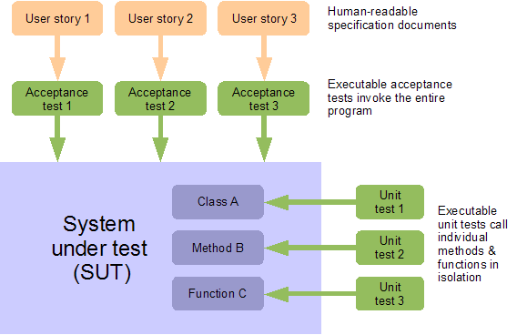
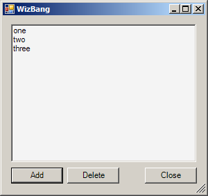
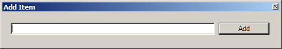
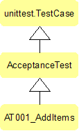

The following was originally published in the excellent Python
Magazine. Thier contractual exclusivity
period has now long expired, so here it comes again. Many thanks to my
technical reviewer Michael
Foord, and to
the editors Brandon Craig Rhodes and
Doug Hellmann, who patiently gave
excellent and much needed guidance through its protracted gestation,
and especially to all my co-workers at Resolver
Systems, from whom I've learned so
much.
Acceptance Testing .NET Applications using IronPython
Unit tests demonstrate to developers that individual functions and
classes work as expected. Acceptance tests are an orthogonal complement
to this. They verify to everybody, including managers and clients, that
features they understand and care about are completed and working
correctly. They also prove that the system as a whole is correctly
integrated and that no regressions have occurred.
Resolver Systems is developing a .NET desktop spreadsheet application,
Resolver One,
for which we have accumulated an acceptance testing framework. This
framework uses Python's standard unittest
module, and is executed
using IronPython.
While Resolver One is written in IronPython, this technique allows
IronPython tests to interact with product code written in any .NET
language.
This article describes the principles of this IronPython acceptance
testing framework, and demonstrates them by creating an acceptance test
for a small sample C# GUI application.
Caveats
When testing products written in static .NET languages such as C#, some
common testing practices like monkey-patching will be unavailable.
Static language classes are not modifiable at runtime, not even from
tests written in IronPython. Fortunately, this is less of a concern for
acceptance testing than it is for unit testing - we want the tests to
operate on the unmodified whole end-to-end system.
Resolver One is currently 40k lines of IronPython. I would guess this is
maybe equivalent to 60-80k lines of C#, demonstrating the viability of
this approach for desktop applications of this size.
Our approach requires source code modifications to the system under test
(SUT.) In particular, the SUT must provide methods for the test to start
and stop the application, and must provide public access to its forms
and other GUI objects. This means that this methodology cannot be used
to black-box test arbitrary compiled programs - it requires the SUT to
be written with testing in mind.
Why Acceptance Test?
Unit tests call individual methods and functions of the SUT, and have a
close correspondence with the internal design of the product. Acceptance
tests, in contrast, invoke the program as a whole, just like a user
would, and have a close correspondence with the product specification.

Acceptance testing automates the expensive, time consuming, error-prone
and soul-destroying process of using a team of human testers to fire up
the application under test, and exhaustively interact with the user
interface to verify the program behaves correctly. Traditionally, a
single iteration of this process can take days or weeks for substantial
applications. Automating the process can yield the same feedback - or
better - in minutes or hours. This reduces costs and provides valuable,
rapid feedback to both developers and project stakeholders.
This is useful for assessing whether user-visible features are correctly
implemented, for doing quick smoke tests to make sure recent changes
haven't accidentally broken other features, or for systematic checking
that new functionality works under various conditions, such as on
different operating systems, or in various browsers. Acceptance tests
can include stress testing, and continually running acceptance tests on
an integration server can detect infrequent, intermittent bugs.
Best of all, acceptance tests that are derived directly from the
specification can prove to clients that the system does what the
requirements ask. This can be invaluable when it comes to client
sign-off on deliverables, especially if the client trusts this process
due to having participated in the creation of the user-stories or
acceptance tests themselves.
Acceptance tests do not yield the same incidental benefits in terms of
good code design as unit tests do. However, creating acceptance tests
before the product code is implemented does allow developers to focus
exclusively on the requirements from a user's point of view. In
practice, this turns out to help immeasurably in defining the
specifications, and in giving developers a solid understanding of them.
Acceptance Tests Should Derive From User Stories
User Stories are a human-readable specification document that
describes a short scenario, using the SUT to perform some actions that a
real user cares about. User stories usually form the entire
specification. Such documents should be informal yet precise, succinct
and easy to understand. In ideal circumstances, your customer would
collaborate with you in creating these documents.
An example user story might look like this:
- Alice starts WizBang. The window appears.
- She sees the three default list entries: 'one', 'two', 'three'.
Nothing is selected.
- She clicks the 'AddButton'
- The 'Add Item' dialog appears
- She types an item name into the dialog and clicks OK
- The new item is at the end of the list, selected.
- She clicks the 'CloseButton'
- The application closes
An acceptance test is an executable script that performs the actions
described in the user story, and verifies the application responds as
expected. To create an acceptance test, at Resolver Systems we paste the
entire user story, as comments, into a new test method, on a class
derived from Python's unittest.TestCase.
from unittest import main as run_test, TestCase
class AT001_AddItems(TestCase):
def test_additems(self):
# 1. Alice starts WizBang. The window appears.
# 2. She sees the three default list entries:
# 'one', 'two', 'three'. Nothing is selected.
# 3. She clicks the 'AddButton'
# 4. The 'Add Item' dialog appears
# 5. She types an item name into the dialog and clicks OK
# 6. The new item is at the end of the list, selected.
# 7. She clicks the 'CloseButton'
# 8. The application closes
self.fail("test not finished")
if __name__ == '__main__':
run_test()
The call to fail() at the end of this test is a good habit to develop.
It stops unfinished tests like this one from passing, making them easy
to accidentally overlook and be forgotten, invisible amongst a large
collection of passing tests. When the test is complete, this fail can be
removed.
Setting up IronPython
In order for IronPython to be able to import from unittest like this,
a copy of the CPython standard library must be on sys.path. If you
installed version 2+ of IronPython from the MSI installer, this is all
taken care of automatically, using a copy of the standard library that
is included with the install. Otherwise, you need to set this up
manually, either by setting an environment variable:
set IRONPYTHONPATH=C:\Python25\Lib
or by appending this directory to sys.path inside your IronPython
install's Lib\site.py file:
import sys
sys.path.append(r'C:\Python25\Lib')
Note that different versions of IronPython require different versions of
the CPython standard library:
- IronPython 1.1: Python 2.4
- IronPython 2.0: Python 2.5
- IronPython 2.6: Python 2.6
Once this is done, test it out by starting ipy.exe, and typing:
If this works without complaint, exit ipy.exe, and run the nascent
acceptance test above, using the DOS command-line:
> ipy.exe AT001_AddItems.py
F
======================================================================
FAIL: test_add_address (__main__.AT001_AddItems)
----------------------------------------------------------------------
Traceback (most recent call last):
File "AT001_AddItems.py", line 11, in test_add_address
self.fail("test not finished")
AssertionError: test not finished
----------------------------------------------------------------------
Ran 1 test in 0.141s
FAILED (failures=1)
About IronPython
IronPython is a .NET based reimplementation of the Python language. It
combines the strength and elegance of Python as a language with the
ability to directly call and interoperate with other .NET code. In daily
use, I am continually surprised by how well this works. IronPython
faithfully mimics CPython - there are almost no surprising differences
between the two. Native Python types are mapped seamlessly and
intuitively to equivalent .NET data types with an absolute minimum of
fuss. For example, IronPython code can generally pass native Python
types, like lists or dictionaries, to .NET functions or methods, instead
of having to instantiate and populate .NET collection classes.
To use a .NET library, your IronPython code first has to add a reference
to the containing .NET assembly. An assembly is a physical chunk of
code, usually contained in a DLL file. To add a reference, use the clr
module, which is built-in to IronPython:
import clr
clr.AddReference('System.Windows.Forms')
This AddReference() function behaves just the same regardless of
whether you are referencing assemblies from the .NET standard library
(as shown here), 3rd party DLLs, or your own .NET projects.
Code within an assembly is contained within namespaces. For the .NET
standard library, the assemblies are usually given the same name as the
namespace they implement. This is the case here, so once the above
assembly is referenced, we can import code from the
System.Windows.Forms namespace just as if it was a Python module:
from System.Windows.Forms import Form
form = Form()
form.Show()
This will display an instance of the .NET form class on screen. Note
that the form does not yet respond to events. For that, we will add a
call to Application.Run(), discussed below.
Note that our IronPython projects always contain an automatic reference
to the System assembly, so anything implemented in there, such as the
System.Threading namespace, can always be imported without having to
explicitly add any references.
Ostensibly, using .NET and IronPython limits the operations described in
this whole article to Windows only. The Mono project should allow this
acceptance testing technique to be used directly on other operating
systems, but that has not been tried.
Implementing the Test
To implement the comments pasted into our acceptance test, three things
must be done:
Firstly, the test must invoke the SUT, once for every test method, in
such a way that the test and the SUT then both run simultaneously.
Secondly, while the test runs, it must be able to make assertions about
the behaviour of the SUT. On the GUI, for example, the test must be able
to read the state of the form and its controls, in order to assert that
the correct text is displayed.
Thirdly, the test must provide simulated input on each of the SUT's
external interfaces, to stimulate the program into action. For example,
then the test must drive the SUT by providing simulated button clicks or
keyboard input.
The method chosen to fulfil all three of these requirements is for the
test to invoke the SUT in the same process, but on a new thread. Since
IronPython is a .NET language, it can directly access the SUT's form and
control objects, making assertions about the state of the controls that
are visible to the user. It can also simulate user actions by calling
methods and firing events on the SUT's GUI controls.
For this acceptance testing technique to work, the start-up of the SUT
must be structured so as to expose a few public members and objects that
are monitored and manipulated by the test. For example, elements of the
GUI must be public. This obviously makes the tests fairly invasive.
We've justified this to ourselves at Resolver Systems by taking a
pragmatic philosophy: These are the smallest set of changes to our
application that we could find in order to make it testable. This
technique has allowed us to create a set of working acceptance tests
that wouldn't otherwise have existed.
The System Under Test
The public methods and objects required from our SUT are shown in the
following minimal C# GUI application, called WizBang. This was
created using the free Visual Studio Express Edition, but could easily
be created using your own development tools of choice. At Resolver
Systems, we prefer to create form layouts using Visual Studio's
excellent GUI designing tool, and then inherit from these generated
classes in other editors, such as Wing, Emacs or Vi.
WizBang defines a couple of simple forms, MainForm and AddItemForm:


WizBang has a public class called Program, which provides public
access to the application's forms, and handles the startup and shutdown
of the application. During startup, it creates and shows an instance of
the main form.
// C# scaffolding for the WizBang application.
// Exposes public functions and GUI forms, for use by tests.
using System;
using System.Threading;
using System.Windows.Forms;
namespace WizBang
{
public class AllForms
{
public static MainForm mainForm;
public static AddItemForm addItemForm;
}
public class Program
{
public ManualResetEvent eventloopReady =
new ManualResetEvent(false);
public void Start()
{
AllForms.mainForm = new MainForm();
AllForms.mainForm.Show();
eventloopReady.Set();
Application.Run();
}
public static void Stop()
{
Application.Exit();
}
}
}
Program.cs and its respective forms can be compiled to a .NET
assembly, WizBang.dll. When the application is run normally by users,
Program.Start() is called by a second Visual Studio project,
RunWizBang, which exists simply to create a minimal Windows
executable.
To run WizBang during testing, the test code references the
WizBang.dll assembly, and calls Program.Start() itself.
Importantly, a new instance of the main form is created every time
Program.Start() is called. This allows many successive tests to run,
each with their own instance of the main form, so that state changes in
one test do not affect subsequent tests. This is important - the
application's state should be completely reset before the start of each
test. Take particular care to do this right if your application has
global state, such as class-level variables, singletons, or relies on
external systems such as the file system, the registry or databases.
After the main form is created and shown, Application.Run() is called.
This is a .NET method which starts the main form's event loop, making
the form responsive to events such as form moves and resizes, control
clicks and keyboard presses.
When the test is completed, it can call the public Program.Stop()
method, which safely disposes of resources and unconditionally closes
the application by calling Application.Exit(). This is a .NET method
which closes all our forms and ends their event loops.
Program.Stop() should be the same method that your application calls
when quitting, after any user confirmations have happened. The following
handler on the main form's Closed event ensures this:
// C# event hander for the main form of the WizBang application
private void MainForm_Closed(object sender, EventArgs e)
{
Program.Stop();
}
Invoking the SUT on a New Thread
If the test calls Program.Start() directly, as described above, then
the program will run, and the main form will be displayed and
responsive, but the test will not work. The reason is that the call to
Application.Run() is synchronous - it does not return until the
program exits. The test will be blocked, waiting for the application's
event loop to end.
The test must invoke the SUT in such a way that the program and the test
can run together in parallel. Invoking the SUT in a new process would be
nice for the sake of decoupling one test from the next. For our
approach, however, the SUT has to run in the same process, to give the
test access to the SUT's public methods and objects.
Program.Start() therefore needs to be called on a new thread, created
by the test. The program's event loop can proceed on the new thread,
handling events to let the application run normally. Meanwhile, our test
can proceed on the original thread, stimulating the GUI and watching the
application's behaviour.
This threading is the reason for the ManualResetEvent instance in
Program.cs. Manual reset events are a .NET construct to facilitate
synchronisation between threads. In this case, the SUT calls Set() in
Program.Start(), to tell the test thread that the main form has been
created and shown. The test can then start to make assertions about the
state of the main form's controls, and trigger events to manipulate
those controls.
For many activities in IronPython, there is a choice of using the
familiar Python libraries, or the .NET equivalents. Threads are no
exception to this - we may use the Python thread or threading
modules, or we may use .NET's Threading library.
Incidentally, these threads differ from those in CPython in one
important respect - there is no Global Interpreter Lock (GIL). The GIL
is an implementation detail of the CPython interpreter. The threads
created by .NET will run concurrently on multiple cores, no matter which
library we use.
We implement this in a new class AcceptanceTest, which sits between
AT001_AddItems and unittest.TestCase in the inheritance hierarchy:

On a real project, many ATxxx test classes would inherit from
AcceptanceTest, which looks like this:
# Python acceptance test base class
# References .NET assemblies - requires IronPython
import clr
clr.AddReference('WizBang')
# import from .NET namespaces - requires IronPython
from System.Threading import ApartmentState, Thread, ThreadStart
# import from the Python standard library
from unittest import TestCase
# import from the .NET namespace of the system under test
from WizBang import Program
class AcceptanceTest(TestCase):
"""
Starts up the program under test (PUT) on a new thread at the start
of each test, and shut it down again after each test has run
"""
def __init__(self, *args):
TestCase.__init__(self, *args)
self.program = None
self.eventloop = None
def setUp(self):
TestCase.setUp(self)
self.program = Program()
self.eventloop = Thread(ThreadStart(self.program.Start))
self.eventloop.Name = "eventloop"
self.eventloop.SetApartmentState(ApartmentState.STA)
self.eventloop.Start()
self.program.eventloopReady.WaitOne()
def tearDown(self):
self.program.Stop()
self.eventloop.Join()
TestCase.tearDown(self)
Python's unittest module will call AcceptanceTest's setUp() method
before each test method is run, so this is an ideal place to create a
new thread and invoke Program.Start() on it. The new thread is given a
name, for ease of hypothetical future debugging. It must be set to a
single threaded apartment state to prevent possible errors if your code
calls any COM components, even indirectly.
Once the new thread has been started, starting the WizBang application,
setUp() waits for a signal from the application on the
ManualResetEvent eventloopReady. This is used by the application to
signal to the test that the main form is shown and its event loop is
started. This prevents over-eager tests from attempting to access the
main form before it is visible and responding to events.
Similarly, tearDown() will be called by unittest after every test has
completed. In this method, Program.Stop() is called to exit this
instance of WizBang. tearDown() then waits for the SUT's event loop
thread to end, by joining it. This is to ensure the next test is not
affected in some way, by allowing it to start before this test has
ended.
This can all be tried out, by modifying AT001_AddItems to inherit from
AcceptanceTest instead of TestCase, and adding a sleep in the body
of the test method, before the fail:
from System.Threading import Thread
from unittest import main as run_test
from AcceptanceTest import AcceptanceTest
class AT001_AddItems(AcceptanceTest):
def test_add_address(self):
# 1. Alice starts WizBang. The window appears.
# etc (not yet implimented)
Thread.Sleep(5000)
self.fail("test not finished")
if __name__ == '__main__':
run_test()
Running this test now displays the SUT's form for the duration of the
sleep, and during that time it is responsive to move and resize events.
Unlike the last version, this test proceeds to execute while the form is
visible, so at the end of the sleep, the test fails, with 'test not
finished', and the SUT is ended, closing its form.
Note that the sleep triggers a runtime warning from ipy.exe on stdout,
about sleeping threads not pumping GUI events. This makes no difference
here, but from now on, we'll do as this warning suggests and replace
sleeps with calls to Thread.CurrentThread.Join(), which behaves the
same as sleep, but continues to process any events that arrive while
sleeping.
Now that our acceptance test is properly starting and stopping the SUT,
we are in a position to start making assertions about the state and
behaviour of the main form.
Asserting Correct Behaviour
We can now start coding the requirements that have been pasted into our
acceptance test as comments. We might be tempted to implement the first
requirement of the acceptance test as follows:
import clr
clr.AddReference('WizBang')
from WizBang import AllForms
# 1. Alice starts WizBang. The window appears.
mainform = AllForms.mainform
self.assertEquals(mainform.Visible, 'form should be visible')
On first glance, this appears to work - you can run this and this assert
will pass. However, there is an insidious problem here, because it
accesses properties of a .NET control from a thread other than the one
it was created on. Such access can sometimes result in an
InvalidOperationException, with a message along the lines of
"Cross-thread operation not valid: Control 'mainform' accessed from a
thread other than the thread it was created on." Worse, depending on
circumstances, sometimes no exception is raised, but values are returned
which may not be correctly synced to the current value of
mainform.Visible.
The proper way to access properties like this is to invoke such code on
the control's own thread. All .NET controls, of which forms are a
subclass, have an Invoke() method for just this purpose.
Conceptually, Invoke() takes a callable, which is executed
synchronously by passing it as an event to the control's event loop (or
the event loop of its parent form). When the event loop processes this
event, the passed callable is invoked on the event loop's thread - which
can safely access the properties of its own controls. The return value
from the callable is passed back by the event-handler, and then safely
marshalled back to the invoking thread as the return value from
Invoke().
In practice, the callable passed to Invoke needs to be wrapped in a
delegate. Delegates are .NET's type-safe function pointers. An
appropriate delegate can be constructed using the IronPython construct
CallTarget0, which denotes a delegate taking zero arguments.
The above sounds like quite a mouthful, and the code is correspondingly
verbose:
import clr
clr.AddReference('IronPython')
from IronPython.Runtime.Calls import CallTarget0
# 1. Alice starts WizBang. The window appears.
getVisible = CallTarget0(lambda: mainform.Visible)
self.assertTrue(mainform.Invoke(getVisible), 'form not visible')
Note that the location of CallTarget0 was changed between IronPython
versions 1 and 2. The location of the import will need to change for the
above code to work on IronPython 1.
Invoking on the control's own thread like this means that our callable
(the lambda: mainform.Visible) can safely access any of mainform's
properties and methods.
More Concise Test Code
The cross-thread invoking described above will be used frequently
throughout our acceptance tests, whenever the properties or methods of a
control are accessed. Such code can be abbreviated slightly, by defining
a method on AcceptanceTest, to help us invoke on the main form's
thread:
def on_gui(self, target):
return self.program.mainform.Invoke(CallTarget0(target))
Which can be used to reduce the length of our assertion to:
# 1. Alice starts WizBang. The window appears.
self.assertTrue(self.on_gui(lambda: mainform.Visible), 'form not visible')
Even so, wrapping access to each attribute individually like is still a
little fiddly, especially if it is happening many times. To improve
this, there is nothing to stop us wrapping larger callables instead. For
example, consider the second user story requirement:
# 2. She sees the three default list entries:
# 'one', 'two', 'three'. Nothing is selected.
self.on_gui(self.assert_list_at_startup)
The function assert_list_at_startup(), shown below, can now have
access to properties on all controls without using Invoke(), since it
runs entirely on the GUI thread:
def assert_list_at_startup(self):
wizList = self.program.mainform.Controls['WizList']
self.assertEquals(wizList.SelectedIndex, -1,
'should be nothing selected')
self.assertEquals(wizList.Items[0], 'one', 'list[0] wrong')
self.assertEquals(wizList.Items[1], 'two', 'list[1] wrong')
self.assertEquals(wizList.Items[2], 'three', 'list[2] wrong')
If any of these assertions should fail, raised exceptions are correctly
propagated back to our test thread. The only problem is that the stack
trace displayed in the test output ends at on_gui()'s cross-thread
invoke - i.e. it does not display the line within
assert_list_at_startup() which failed. However such stack traces are
accompanied by the error message from the failing assertion, so this is
not usually a problem. If this turns out to be critical for your
situation, it is possible to create your own cross-thread exception
handler which fixes this, reconstituting the entire stack trace even
across thread boundaries.
Wrapping callables, as on_gui() does, is often usefully implemented as
a decorator. This can be provided by our AcceptanceTest module:
def guithread(target):
def wrapper(*args, **kwargs):
test = args[0]
return test.on_gui(lambda: target(*args, **kwargs))
return wrapper
This decorator expects to be applied to methods on AcceptanceTest, so
that it can call .on_gui() on this method's first parameter. if the
decorated function is not a method on AcceptanceTest, the decorator will
not work.
Functions like assert_list_at_startup(), above, which make frequent
access to properties of controls, can now be decorated:
@guithread
def assert_list_at_startup(self):
wizList = self.program.mainform.Controls['WizList']
self.assertEquals(wizList.SelectedIndex, -1,
# etc
Such a decorated method can then be conveniently called by the
acceptance test:
# 2. She sees the three default list entries:
# 'one', 'two', 'three'. Nothing is selected.
self.assert_list_at_startup()
It is tempting at this point to simply decorate our entire test method
with @guithread, so that the whole thing can execute on the GUI thread
and have unfettered access to the form's attributes and controls.
However, this would not work since the test needs to surrender its use
of the GUI thread from time to time, to allow the form to process all
the events on its event loop. Without this, the form would be blocked,
waiting for the test to finish, and would be unable to handle button
clicks and other input. Amongst other things, this would prevent the
form from reacting to the simulated user input that our test is about to
provide.
Simulating User Button Clicks
The next part of our acceptance test requires that the test provides
some input to the SUT, simulating the actions of a user:
# 3. She clicks the 'AddButton'
Buttons provide a method specifically to simulate being clicked, which
our test can use. A small utility method on AcceptanceTest calls this
on the GUI thread:
@guithread
def click_button(self, form, buttonName):
form.Controls[buttonName].PerformClick()
This can be used in our acceptance test:
# 3. She clicks the 'AddButton'
self.click_button(mainform, 'addButton')
Running the test will now correctly click the add item button.
However, the Wizbang application does not yet have any button click
handlers, so the button has no effect.
Up until this point, all the assertions in AT001_AddItems have passed
without us having to modify WizBang the application. This is because the
conditions being tested were already set up correctly by the design-time
properties of the main form, or by the application's scaffolding code in
WizBang.Program.
When using test-driven development (TDD), this is generally not the
case, and in fact, this is not true for our next requirement, which
tests that the add item button click caused the add item form to
appear. Since this is not yet implemented, when the test is run, this
assertion will fail:
# 4. The 'Add Item' dialog appears
addItemForm = AllForms.addItemForm
self.assertTrue(self.on_gui(lambda: addItemForm.Visible),
'additem form should be visible')
To make this requirement pass, the following click handler is attached
to the Add Item button on WizBang's main form. We're going to skip
unit tests for this article, but on a real project, this is the perfect
time to create them - after the acceptance test, but before the
implimentation. Once they are done, the handler to make them and the
acceptance test both pass looks like this:
// C# click handler for the AddItem button on WizBang's main form
private void AddButton_Click(object sender, EventArgs e)
{
if (AllForms.addItemForm == null)
AllForms.addItemForm = new AddItemForm();
AllForms.addItemForm.Show();
}
In a real application, this handler would need to be a little more
robust, able to handle multiple clicks of the button, and forms which
are disposed or already visible. However, this behaviour is not yet
tested by our acceptance test, and therefore TDD conveniently suggests
that for the moment, it should remain unimplemented.
Simulating User Keyboard Input
The next requirement asks that our test simulate the user typing into a
TextBox control on the add item form. This can be trivially
implemented using the techniques discussed thus far:
# 5. She types an item name into the dialog and clicks OK
self.set_text(addItemForm.addItem, 'hello')
self.click_button(addItemForm, 'okButton')
self.assertFalse(
self.on_gui(lambda: addItemForm.Visible),
"additem form should close")
Where set_text() is a small helper function provided by
AcceptanceTest:
@guithread
def set_text(self, textbox, text):
textbox.Text = text
Running this test will successfully populate the TextBox with the word
"hello". However, this is a fairly poor acceptance test. If the TextBox
control did not have focus, then a real user would have to perform extra
steps before being able to type into it. If the TextBox was not visible
or enabled, then a user would not be able to type into it at all. Our
test implementation, by simply setting the Text attribute, performs an
end-run around many of the restrictions that real users would face, and
hence is not a good test of the application's behaviour as a user would
actually experience it.
The simplest way to improve on this for the moment is to explicitly test
for these conditions:
@guithread
def set_text(self, textbox, text):
self.assertTrue(textbox.Visible, 'textbox should be visible')
self.assertTrue(textbox.Focused, 'textbox should have focus')
self.assertTrue(textbox.Enabled, 'textbox should be enabled')
textbox.Text = text
Running this test does actually reveal a genuine error - the add item
form's textbox does not have focus. A real user, on running WizBang,
would have to click or use the tab key to give the textbox focus, a step
which our test has previously been able to obliviously skip. We would
prefer that our user didn't have to do this either, so we add an
Activated handler on the AddItemForm:
// C# handler for the add item form's Activated event
private void AddItemForm_Activated(object sender, EventArgs e)
{
addItem.Focus();
}
This makes the acceptance test pass. Implementing the next test
requirement is straightforward:
# 6. The new item is at the end of the list, selected.
self.assert_list_after_add()
where:
@guithread
def assert_list_after_add(self):
self.assertEquals(self.item_count(), 4, 'should be 4 items')
wizList = AllForms.mainForm.Controls['WizList']
self.assertEquals(wizList.Items[3], 'hello', 'list[3] wrong')
self.assertEquals(wizList.SelectedIndex, 3, '4th should be selected')
This is asserting that the text we typed into the add item form
("hello") is added to the end of the main form's list, and is selected.
In order to make this pass, we need a click handler for the OK button on
the add item form:
// C# handler for add item form's ok button
private void okButton_Click(object sender, EventArgs e)
{
ListBox wizList = AllForms.mainForm.WizList;
wizList.Items.Add(addItem.Text);
wizList.SelectedIndex = wizList.Items.Count - 1;
this.Close();
}
Finally, the test closes down the application and ends:
# 7. She clicks the 'CloseButton'
self.click_button(mainForm, 'closeButton')
# 8. The application closes
self.assertTrue(mainForm.IsDisposed, 'mainform should close')
Notice how access to mainForm.IsDisposed is not invoked on the GUI
thread. By this point in the test, all being well, the main form has
been closed, and its thread will be ended. Attempting to invoke on it
will fail. Instead, we read this property directly.
To make this pass, we add a simple button click hander to the main
form's Close button:
// C# handler for click event on main form's close button
private void CloseButton_Click(object sender, EventArgs e)
{
this.Close();
}
Simulating Mouse and Keyboard Events
Directly calling controls' methods and setting their properties, as
described above, can be problematic, since the controls will not behave
precisely as they would when in use by a real user. Our assertions above
that controls being manipulated are currently visible, enabled and
focussed are a partial solution to this problem.
However, there are many other possible ways in which our tests could
unintentionally get the SUT to behave in ways that are different from
the behaviour a real user would see. For example, a textbox could have a
custom keypress handler, which performs input validation of some kind.
Such a handler would not be invoked when our test simply sets the
.Text property of the control, as we do above.
In a worst case scenario, acceptance tests could pass even though the
application was completely unusable by a real user.
To combat this, the approach taken at Resolver Systems is to stimulate
controls by generating fake Win32 mouse and keyboard events. This drives
the application by, for example, actually moving the mouse cursor over a
button, then issuing a mouse click event. Windows itself then fires the
button click event, which ends up calling the click event handlers.
This approach guarantees that our acceptance tests are only able to
perform the same actions that a human user would be able to, and is more
of a true 'end-to-end' test - which seems like a good principle for
acceptance tests to aim for in general.
Simulating user input in this way, however, is not without drawbacks.
The acceptance test framework sends low level mouse events, using the
win32 function SendInput(), from the Windows user32.dll. Calling win32
functions from IronPython like this requires creating a C# assembly, in
which we expose SendInput(), and more than a dozen similar functions,
by declaring them as follows:
using System.Runtime.InteropServices;
namespace UnmanagedCode
{
// extensive type declarations for type 'Input' go here
public class User32
{
[DllImport("user32.dll", CharSet = CharSet.Auto)]
public static extern int SendInput(
int nInputs, ref Input pInputs, int cbSize);
}
}
It turns out that populating the large Input data structure to be
passed to this function takes another 50 lines of code. Similar
scaffolding is required to support keyboard events. This is a
substantial extra layer of complexity - albeit one that has proven
reliable and stable since it was created.
Having said that, the acceptance tests written this way are not
completely reliable in operation - developers (or office cleaners)
moving the mouse or leaning on the keyboard can interfere with the
running tests. Sometimes, due simply to race conditions, the GUI does
not respond as quickly as the test script expects, causing spurious
failures. While issues such as these can be accounted for, for example
by waiting for events or for conditions before allowing tests to
proceed, this still causes a significant level of false positives in our
test failures, as new tests 'bed down' and we gradually discover and
compensate for their intermittent failure modes.
Finally, it is probable that our tests run more slowly than they would
if they invoked event handlers directly. To some extent this is
mitigated by a distributed test runner, which splits any given test
suite across all idle desktop machines in the office. However, there are
many tests, some of which are stress tests, and running our full
acceptance test suite still takes at least a couple of hours. Having it
run faster would always be beneficial.
Because both speed and reliability might be improved to some extent by
reducing our use of keyboard and mouse events, it would be advisable to
at least consider trying the simpler techniques described earlier in
this article, before attempting to generate mouse and keyboard events
like this.
Conclusion
We've seen how to construct an IronPython acceptance test for an
application written in C#.
Despite the pitfalls described in the last section, we're very happy
with acceptance testing of our .NET desktop application at Resolver
Systems. It has proven to be eminently feasible, and of great value to
us. In addition to the well-known benefits of unit-testing, acceptance
testing provides an orthogonal layer of information about the
system-under-test.
Most directly, it gives concrete, rapid feedback on the completion and
robustness of features at a level that managers care about and users
understand. Also, it provides thorough smoke tests to check that recent
changes have not broken existing functionality. Perhaps most important
of all, however, acceptance tests provide a method to precisely specify
detailed requirements which can be easily created by users, are
intimately understood by developers, are provably met, and are trivially
traceable through to the final phases of the project.
Given acceptance tests such as those described in this article,
test-driven development then provides developers with the ability to
navigate from requirements through to working code that provably fulfils
the specification, using a series of small, discrete and well-understood
steps. This gives projects practical tools with which to make rapid
progress, to avoid major risks, and to meaningfully measure the
project's current status and velocity.
Readers who are interested in using IronPython, for testing or for other
purposes, should check out IronPython in
Action, a pragmatic and densely
informative new book by Michael Foord, which caters to both Python and
.NET developers.